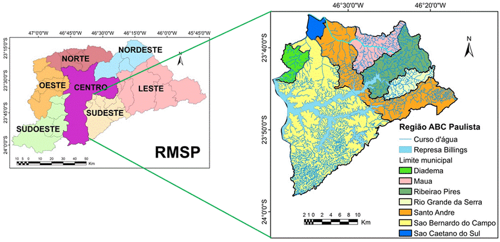

Ribeirão Pires
.png)
Ribeirão Pires é um município do estado de São Paulo, na Região Metropolitana de São Paulo, integrando um grupo de municípios conhecidos como Região do Grande ABC, na Zona Sudeste da Grande São Paulo, em conformidade com a Lei Estadual nº 1.139, de 16 de junho de 2011[8] e, consequentemente, com o Plano de Desenvolvimento Urbano Integrado da Região Metropolitana de São Paulo (PDUI)[9]. 
A população estimada em 2021 era de 125.238 habitantes e a área é de 99 km², o que resulta numa densidade demográfica de 1262,80 hab/km². O município é formado pela sede e pelos distritos de Jardim Santa Luzia e Ouro Fino Paulista[10][11].
Seus municípios limítrofes são Suzano (a nordeste), Rio Grande da Serra (a sudeste e sul), Santo André (a sudoeste) e Mauá (a noroeste). Tornou-se município em 30 de dezembro de 1953[12], quando foi desmembrada de Santo André. Sua data oficial de emancipação político-administrativa foi instituída em 1º de janeiro de 1954 pela Lei Municipal 2.463/1983[13], sendo comemorado o seu aniversário no dia 19 de março, em homenagem a São José, Padroeiro da Cidade.